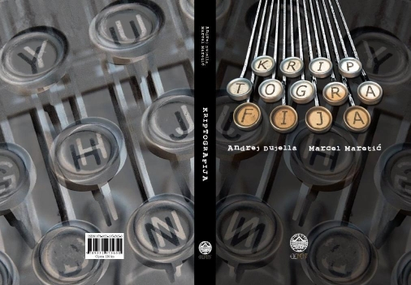

Za vrijeme trajanja Interlibera (12.-17.11.2024.), popust na knjigu Kriptografija i na portalu Elementa.
Ljudi su od davnina željeli sigurno komunicirati, ali bili su svjesni da njihove poruke često putuju nesigurnim komunikacijskim kanalima. Iako su se kroz stoljeća načini prenošenja poruka uvelike promijenili, osnovni problem zapravo je ostao isti, a to je kako onemogućiti onoga tko može nadzirati kanal, kojim se prenosi poruka, da dozna njezin sadržaj. Načinima rješavanja ovog problema bavi se znanstvena disciplina koja se naziva kriptografija.
Metode, koje su se najčešće tijekom povijesti koristile za šifriranje poruka, bile su zamjena (supstitucija) i premještanje (transpozicija) osnovnih elemenata teksta (slova, blokova slova, bitova). Kombinaciju ovih dviju metoda susrećemo i danas u najmodernijim simetričnim kriptosustavima. Asimetrični kriptosustavi ili kriptosustavi s javnim ključem pojavili su se tek 70-tih godina 20. stoljeća. Kod njih se za šifriranje koriste funkcije koje su "jednosmjerne" (one se računaju lako, ali njihov inverz vrlo teško). To znači da funkcija za šifriranje može biti javna, dok samo funkcija za dešifriranje mora biti tajna. U konstrukciji jednosmjernih funkcija koriste se "teški" matematički problemi, kao što su faktorizacija velikih prirodnih brojeva, te logaritmiranje u konačnim grupama.
Ova je knjiga nastala na osnovi on-line skripte iz kolegija Kriptografija koji se od akademske godine 1999/2000. predaje kao izborni kolegij na PMF-Matematičkom odjelu. Knjiga je prvenstveno namijenjena studentima matematike. No, vjerujemo da će imati znatno šire čitateljstvo. Imajući to u vidu, knjiga je koncipirana tako da se što veći dio njezinog sadržaja može pratiti uz minimalno matematičko predznanje. Naravno, osnovni pojmovi iz teorije brojeva su nužni za razumijevanje kriptosustava s javnim ključem. Stoga su oni uvedeni najprije nešto neformalnije na mjestima gdje se za njima prvi put ukazala potreba, a sustavno su obrađeni u posljednjem poglavlju pod naslovom Algoritamska teorija brojeva.
Predgovor
1. Klasična kriptografija
1.1. Osnovni pojmovi
1.2. Supstitucijske šifre
1.3. Vigenèreova šifra
1.4. Playfairova šifra
1.5. Hillova šifra
1.6. Jednokratna bilježnica
1.7. Transpozicijske šifre
1.8. Naprave za šifriranje
1.8.1 Jeffersonov kotač za šifriranje
1.8.2 Hebernov električni stroj za kodiranje
1.8.3 ENIGMA
1.8.4 Hagelinov stroj M-209
1.9. Zadatci
2. Moderni simetrični blokovni
kriptosustavi
2.1. Data Encryption Standard (DES)
2.1.1 Opis algoritma DES-a
2.1.2 Svojstva DES-a
2.2. Načini djelovanja blokovnih šifri
2.3. Kriptoanaliza DES-a
2.3.1 Diferencijalna kriptoanaliza
2.3.2 Linearna kriptoanaliza
2.4. Neke zamjene za DES
2.4.1 Trostruki DES
2.4.2 IDEA
2.4.3 CAST-128
2.4.4 RC5
2.5. Advanced Encryption Standard
2.6. Zadatci
3. Kriptografija javnog ključa
3.1. Ideja javnog ključa
3.2. Kriptosustavi zasnovani na problemu faktorizacije
3.2.1 RSA kriptosustav
3.2.2 Kriptoanaliza RSA kriptosustava
3.2.3 Rabinov kriptosustav
3.3. Kriptosustavi zasnovani na problemu faktorizacije
3.3.1 Diffie-Hellmanov protokol za razmjenu ključeva
3.3.2 ElGamalov kriptosustav
3.3.3 Index calculus metoda
3.3.4 Primjena eliptičkih krivulja u kriptografiji
3.3.5 Hipereliptičke krivulje
3.4. Ostali kriptosustavi s javnim ključem
3.4.1 Problem ruksaka
3.4.2 McElieceov kriptosustav
3.4.3 NTRU kriptosustav
3.5. Zadatci
4. Kriptografija u praksi
4.1. Kriptografske hash funkcije
4.1.1 Secure Hash Algorithm
4.1.2 MAC kodovi
4.2. Generatori slučajnih brojeva
4.2.1 Izvori slučajnih bitova
4.2.2 Generatori pseudoslučajnih brojeva
4.2.3 Analiza sigurnosti generatora
4.3. Digitalni potpis
4.3.1 Digital Signature Algorithm
4.3.2 Elliptic Curve Digital Signature Algorithm
4.3.3 Napad zasnovan na paradoksu rođendana
4.4. Problem identiteta
4.5. Primjer hibridnog kriptosustava: PGP
4.6. Zadatci
5. Algoritamska teorija brojeva
5.1. Osnovni algoritmi iz teorije brojeva
5.1.1 Složenost algoritama
5.1.2 Množenje prirodnih brojeva
5.1.3 Modularno množenje i potenciranje
5.1.4 Euklidov algoritam
5.1.5 Kineski teorem o ostatcima
5.1.6 Verižni razlomci
5.1.7 Kvadratne kongruencije
5.1.8 Kvadrati i kvadratni korijeni
5.2. Eliptičke krivulje
5.2.1 Grupovni zakon
5.2.2 Eliptičke krivulje nad Q
5.2.3 Eliptičke krivulje nad konačnim poljima
5.2.4 Određivanje reda grupe E(Fq)
5.3. Testiranje i dokazivanje prostosti
5.3.1 Distribucija prostih brojeva
5.3.2 Pseudoprosti brojevi
5.3.3 Dokazivanje prostosti pomoću eliptičkih krivulja
5.3.4 Polinomijalni AKS algoritam za dokazivanje prostosti
5.4. Metode faktorizacije
5.4.1 Pollardova ρ metoda
5.4.2 Pollardova p - 1 metoda
5.4.3 Faktorizacija pomoću eliptičkih krivulja
5.4.4 Metoda verižnog razlomka
5.4.5 Metoda kvadratnog sita
5.5. Zadatci
Bibliografija
Indeks
Komentare, primjedbe i sugestije u vezi knjige možete poslati na e-mail adresu duje@math.hr. Posebno ćemo biti zahvalni svima koji nam ukažu na nedostatke ili moguće pogrješke u knjizi.
| Web stranica kolegija Kriptografija | Andrej Dujella - osobna stranica |